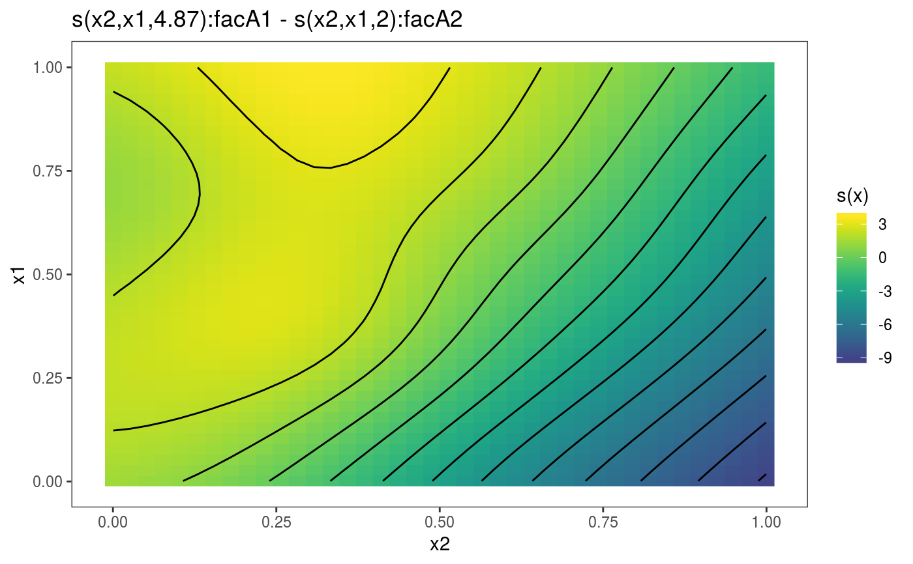

Plotting differences between two 2D smooth effects
Source:R/plotDiff_mgcv_smooth_2D.R
plotDiff.mgcv.smooth.2D.RdThis method can be used to plot the difference between two 2D smooth effects. Mainly meant to be used with by-factor smooths.
# S3 method for mgcv.smooth.2D plotDiff( s1, s2, n = 40, too.far = 0.1, trans = identity, unconditional = FALSE, ... )
Arguments
| s1 | a smooth effect object, extracted using mgcViz::sm. |
|---|---|
| s2 | another smooth effect object. |
| n | sqrt of the number of grid points used to compute the effect plot. |
| too.far | if greater than 0 then this is used to determine when a location is too far from data to be plotted. This is useful since smooths tend to go wild away from data. The data are scaled into the unit square before deciding what to exclude, and too.far is a distance within the unit square. Setting to zero can make plotting faster for large datasets, but care then needed with interpretation of plots. |
| trans | monotonic function to apply to the smooth and residuals, before plotting. Monotonicity is not checked. |
| unconditional | if |
| ... | currently unused. |
Value
An objects of class plotSmooth.
Details
Let sd be the difference between the fitted smooths, that is: sd = s1 - s2. sd is a vector of length n, and its covariance matrix is Cov(sd) = X1\ where: X1 (X2) and Sig11 (Sig22) are the design matrix and the covariance matrix of the coefficients of s1 (s2), while Sig12 is the cross-covariance matrix between the coefficients of s1 and s2. To get the confidence intervals we need only diag(Cov(sd)), which here is calculated efficiently (without computing the whole of Cov(sd)).
References
Marra, G and S.N. Wood (2012) Coverage Properties of Confidence Intervals for Generalized Additive Model Components. Scandinavian Journal of Statistics.
Examples
# Simulate data and add factors uncorrelated to the response library(mgcViz) set.seed(235) dat <- gamSim(1,n=1500,dist="normal",scale=20)#> Gu & Wahba 4 term additive modeldat$fac <- as.factor( sample(c("A1", "A2", "A3"), nrow(dat), replace = TRUE) ) dat$logi <- as.logical( sample(c(TRUE, FALSE), nrow(dat), replace = TRUE) ) bs <- "cr"; k <- 12 b <- gam(y ~ s(x2, x1, by = fac), data=dat) o <- getViz(b, nsim = 0) # Extract the smooths correspoding to "A1" and "A2" and plot their difference pl <- plotDiff(s1 = sm(o, 1), s2 = sm(o, 2)) pl + l_fitRaster() + l_fitContour()